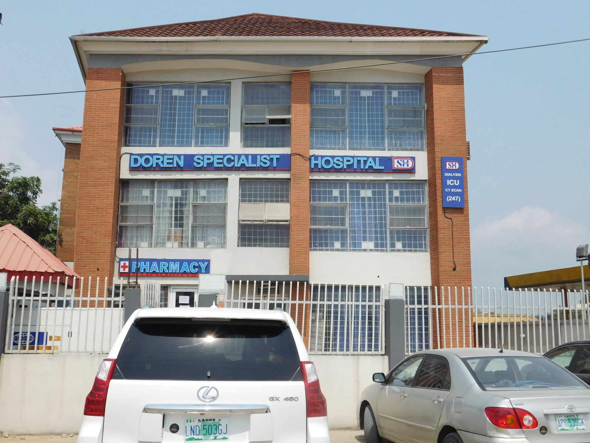
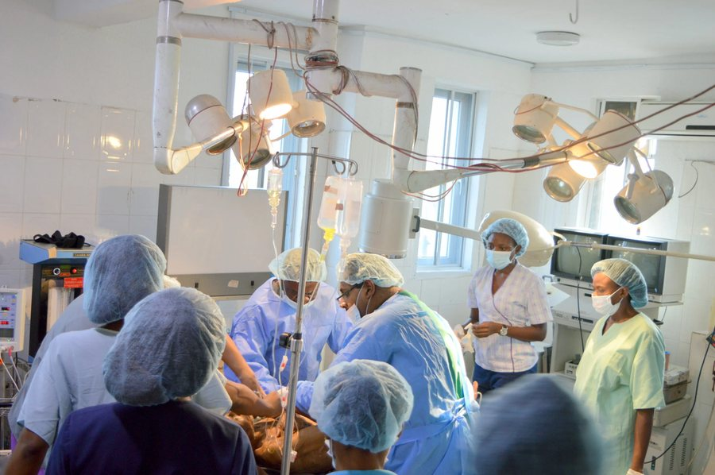
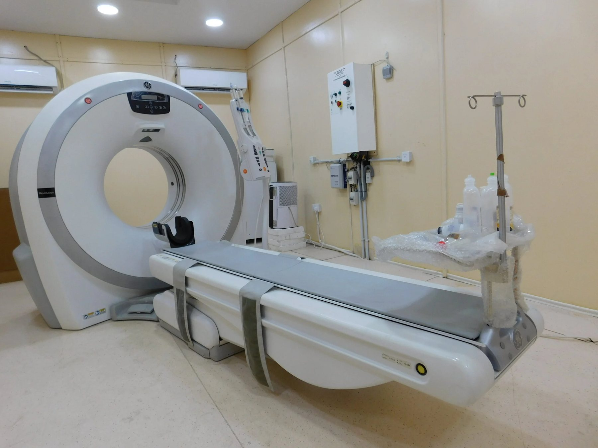
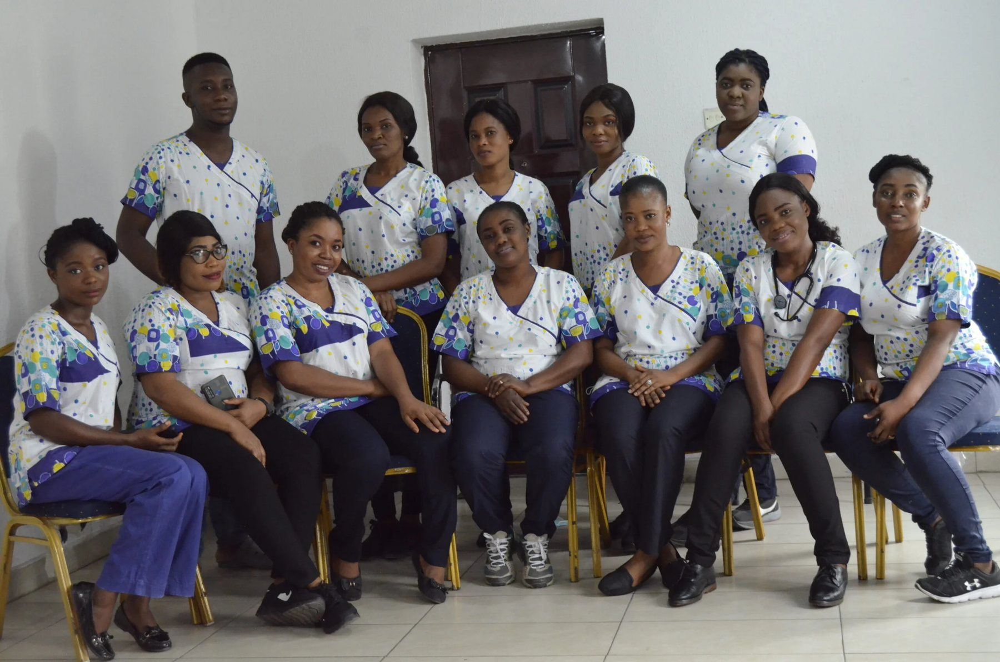
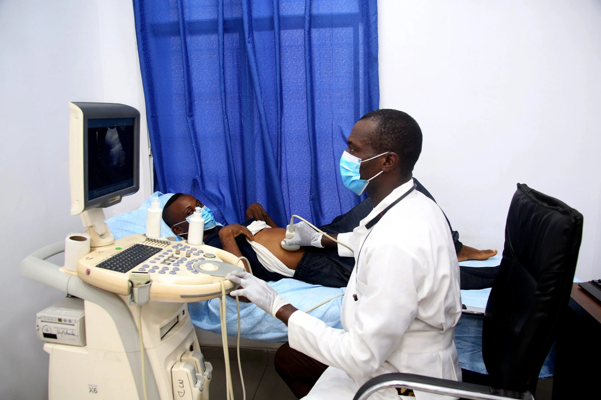
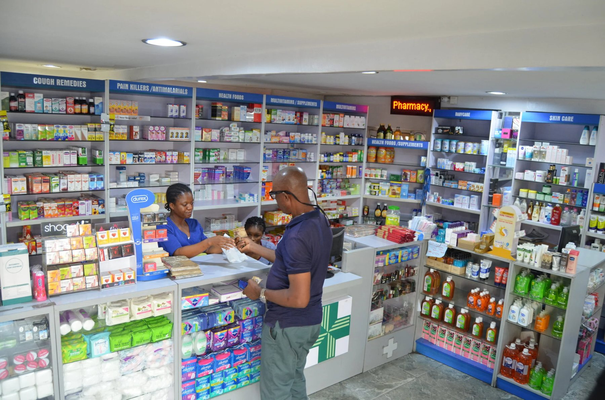
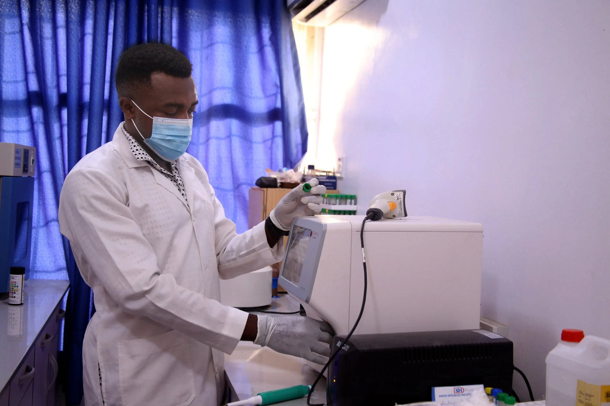
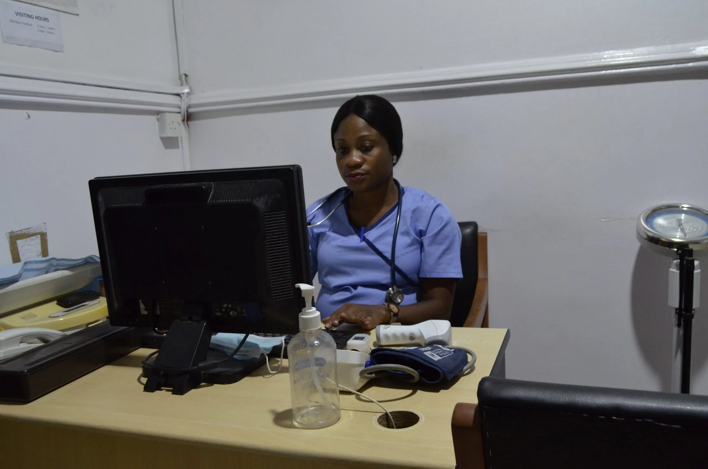

Ajah
Main hospital
1 OsaPaul Street (formerly Kemfat Road), Thomas Estate, Ajah

Qualitative, affordable and prompt healthcare, in a clean, polite and convivial environment.

Choose a branch and a specialty, see open slots, and get a reminder by SMS or WhatsApp. Your front desk sees the whole day at a glance.
ECG and echocardiography.
Antenatal care and the Gynaecare IVF Centre.
Spine surgery, knee and hip replacement.
Nephrology and dialysis.

Laboratory, radiology, sonography, CT scan, endoscopy and laparoscopy, with results back to your doctor.
1 OsaPaul Street (formerly Kemfat Road), Thomas Estate, Ajah
8 Omu Oba Samsudeen, off Lewis Fadipe Road, Thomas Estate
Beside Pencil filling station, Lekki-Epe Expressway





Call the Ajah hospital on +234 802 306 2100.